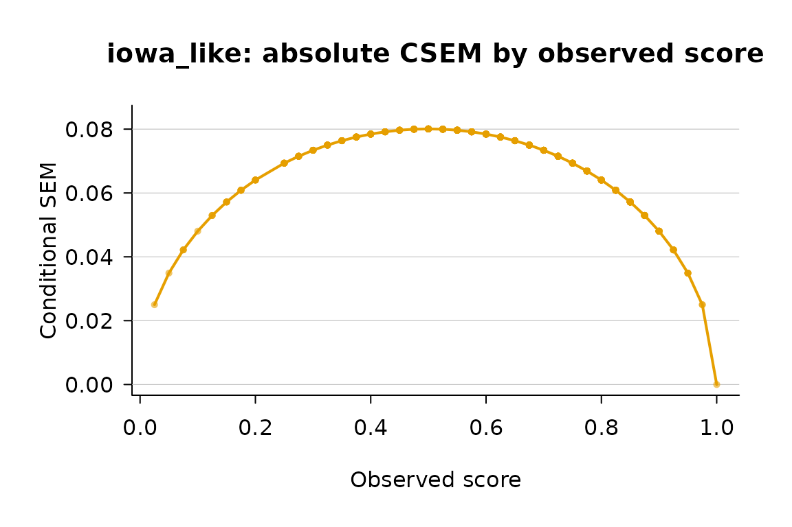
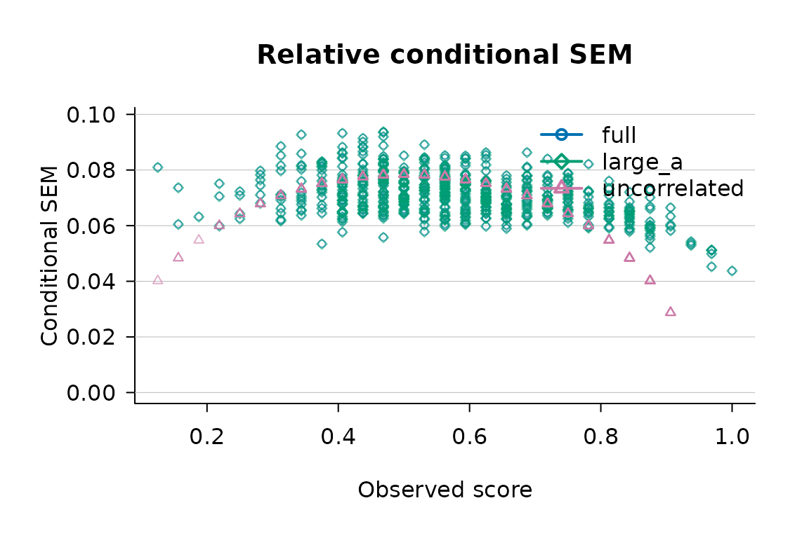
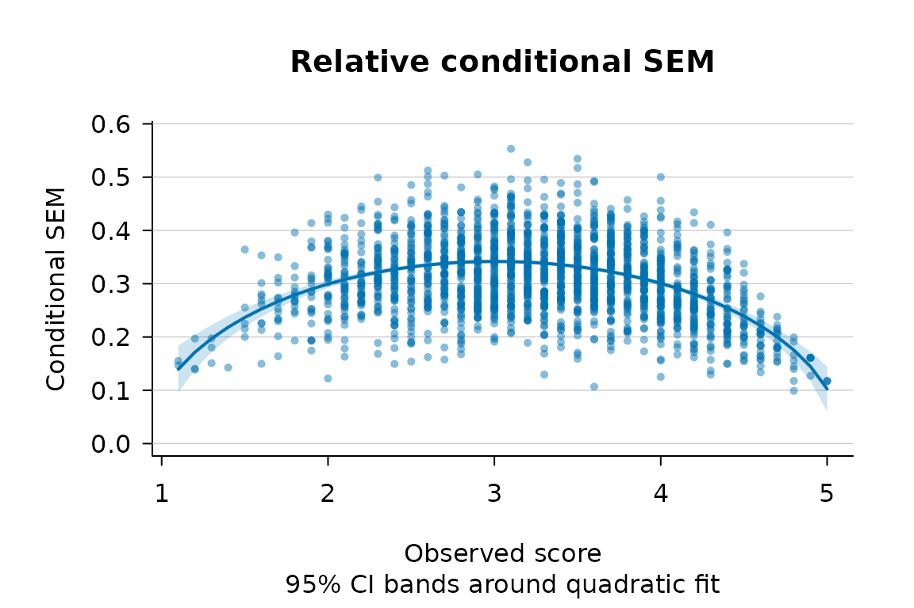

Overview
This vignette puts csemGT to work on three illustrations
that parallel, in simplified form, the worked examples in the companion
Stata paper for gtcsem. The polytomous extension of the
first example (the CES-D weekly scoring case in the Stata paper) is
omitted here because it depends on clinical data that are not publicly
available. In exchange, the bootstrap option is showcased below,
complementing the analytical SEs reported throughout the paper.
The three examples are:
- A binary educational test, where we verify the equivalence of GT’s absolute CSEM with Lord’s (1955) binomial-error formula, and then introduce bootstrap SEs.
- A dichotomous SAT-style test, where we compare the three relative-
error estimators (
full,large_a,uncorrelated) implemented incsem_gt(). - A Likert personality scale, where the smoother and the D-study features take centre stage.
The intro vignette
(vignette("intro-csem-gt", package = "csemGT")) covers the
bare estimation workflow; readers new to the package may prefer to start
there.
Example 1: A binary educational test, verifying Lord (1955)
In the dichotomous case, the absolute CSEM derived under Generalizability Theory for a single-facet design collapses to Lord’s (1955) classic binomial-error formula. Letting denote person ’s observed total raw score and the number of items,
Brennan (1998) makes this equivalence explicit (his equation 8). We
verify it numerically on iowa_like, a simulated
ITED-Vocabulary-like dataset distributed with the package; see
?iowa_like for the calibration details. To keep the example
fast we work with a reproducible subsample of 600 persons.
set.seed(1998)
idx <- sample(nrow(iowa_like), size = 600)
sub <- iowa_like[idx, ]
n_i <- ncol(sub)
fit <- csem_gt(sub, error_type = "absolute", method = "full")The package returns one fitted value per observed total score in
fit$by_score. We compare those against the Lord formula
evaluated at the same scores:
score_tbl <- fit$by_score[, c("observed_score", "csem.absolute")]
score_tbl$csem_lord <- with(
score_tbl,
sqrt(observed_score * (n_i - observed_score) / (n_i - 1)) / n_i
)
score_tbl$diff <- score_tbl$csem.absolute - score_tbl$csem_lord
head(score_tbl, 8)
#> observed_score csem.absolute csem_lord diff
#> 1 0.025 0.02500000 0.004001953 0.02099805
#> 2 0.050 0.03489912 0.005657846 0.02924128
#> 3 0.075 0.04217637 0.006927249 0.03524912
#> 4 0.100 0.04803845 0.007996393 0.04004205
#> 5 0.125 0.05295741 0.008937438 0.04401997
#> 6 0.150 0.05717719 0.009787404 0.04738978
#> 7 0.175 0.06084343 0.010568288 0.05027514
#> 8 0.200 0.06405126 0.011294428 0.05275683
max(abs(score_tbl$diff))
#> [1] 0.0627744The maximum absolute discrepancy is at the floor of double precision; the two formulas are algebraically identical for the binary design.
plot(fit, main = "iowa_like: absolute CSEM by observed score")
Per-person absolute CSEM for the iowa_like subsample (n = 600, I = 40), full estimator.
Adding bootstrap standard errors
The CSEM values just shown are per-person point estimates:
each one asks how precise this person’s score is. A different question
is how precise that estimate of the precision is itself, which
is a second-order quantity. By default csem_gt() returns
delta-method analytical SEs and confidence intervals for it; setting
bootstrap = TRUE together with
return_analytical = TRUE adds item-resampling bootstrap
counterparts in the same fit, without displacing the analytical
ones.
fit_boot <- csem_gt(
sub,
error_type = "absolute",
method = "full",
bootstrap = TRUE,
return_analytical = TRUE,
R = 200L,
bootstrap_type = "item",
ci_method = "percentile",
seed = 1998
)
#> Within-score heterogeneity when collapsing to the by-score table, in: ci_low.boot.absolute, ci_up.boot.absolute, csem_var.boot.absolute, se.boot.absolute. The by-score value is the within-score mean. This is expected with polytomous items; with strictly dichotomous items these estimators are functions of the observed score alone, so heterogeneity there would be worth checking.Five randomly chosen persons illustrate the side-by-side layout that
the resulting estimates table now carries:
cols <- c("observed_score", "csem.absolute",
"se.analytic.absolute", "se.boot.absolute",
"ci_low.analytic.absolute", "ci_up.analytic.absolute",
"ci_low.boot.absolute", "ci_up.boot.absolute")
fit_boot$estimates[1:5, cols]
#> observed_score csem.absolute se.analytic.absolute se.boot.absolute
#> 1 0.400 0.07844645 0.007412744 0.002934926
#> 2 0.675 0.07500000 0.007753380 0.004691032
#> 3 0.700 0.07337994 0.007924557 0.005284479
#> 4 0.525 0.07996393 0.007272072 0.001303937
#> 5 0.575 0.07915823 0.007346090 0.002514177
#> ci_low.analytic.absolute ci_up.analytic.absolute ci_low.boot.absolute
#> 1 0.06391774 0.09297517 0.07269410
#> 2 0.05980366 0.09019634 0.06580575
#> 3 0.05784809 0.08891178 0.06302255
#> 4 0.06571094 0.09421693 0.07740827
#> 5 0.06476016 0.09355630 0.07423054
#> ci_up.boot.absolute
#> 1 0.08419880
#> 2 0.08419425
#> 3 0.08373733
#> 4 0.08251960
#> 5 0.08408593For the binary
design the two SE sources should agree to within Monte-Carlo error;
sizable discrepancies would point to sample-size or distributional
issues worth investigating. A larger R will tighten the
bootstrap interval; here we keep R = 200 to keep the
vignette fast to build.
Example 2: A dichotomous educational test, comparing estimators (SAT12)
The second example uses the SAT12 science items from package
mirt (Chalmers, 2012). mirt is a
Suggests, so the chunks below run only when it is
installed:
has_mirt <- requireNamespace("mirt", quietly = TRUE)We score the multiple-choice items dichotomously against the published key (with one corrected entry at item 32):
key <- c(1, 4, 5, 2, 3, 1, 2, 1,
3, 1, 2, 4, 2, 1, 5, 3,
4, 4, 1, 4, 3, 3, 4, 1,
3, 5, 1, 3, 1, 5, 4, 3)
scored <- mirt::key2binary(mirt::SAT12, key)
scored <- scored[stats::complete.cases(scored), ]
dim(scored)
#> [1] 600 32A single csem_gt() call lists all three relative-error
estimators at once and disables the smoother (we want the raw scatter,
not a quadratic summary):
fit_sat <- csem_gt(
scored,
error_type = "relative",
method = c("full", "large_a", "uncorrelated"),
smoother = "none"
)The compare layout overlays the three estimators on one panel, with
the per-person scatter (compare_points = TRUE) showing
where they agree, where they diverge, and where the
uncorrelated estimator returns negative error variance for
individual respondents. Those cases are coerced to zero by default and
recorded in fit_sat$diagnostics:
plot(
fit_sat,
compare_methods = TRUE,
compare_points = TRUE,
show_smooth = FALSE
)
Relative CSEM under the three estimators implemented by csem_gt() for the SAT12 science test.
The full estimator carries within-score heterogeneity
(multiple points at the same observed score, reflecting the
person-by-item covariance term in equation 33 of Brennan, 1998);
large_a collapses that to a single value per score by
replacing the covariance term with its
large-
approximation; uncorrelated drops the term entirely, which
is what produces the negative-variance cases at extreme scores.
Example 3: A Likert personality scale, smoother and D-study
For polytomous data with non-binary response options the
csem_gt() interface applies without modification. We use
ipip_like, a simulated 10-item, 5-point
Conscientiousness-like subscale calibrated to summary statistics of the
IPIP-50 inventory (Goldberg, 1992; Goldberg, Johnson, Eber, Hogan,
Ashton, Cloninger, & Gough, 2006). See ?ipip_like for
calibration details.
fit_ip <- csem_gt(
ipip_like,
error_type = "relative",
method = "full",
smoother = "polynomial"
)The recovered variance components and the generalizability
coefficient
live in fit_ip$variance_components:
fit_ip$variance_components$person
#> [1] 0.4350021
fit_ip$variance_components$item
#> [1] 0.137863
fit_ip$variance_components$residual
#> [1] 1.007493
fit_ip$variance_components$reliability_coefficients$erho2
#> [1] 0.8119477These match, to ANOVA tolerance, the calibration targets documented
in ?ipip_like
(,
,
,
).
The wide per-person table can be inspected via the data-frame
method:
as.data.frame(fit_ip)[1:5, ]
#> person_id observed_score conditioning_value group_size extreme cov_xim
#> 1 1 4.2 4.2 67 FALSE 0.09140000
#> 2 2 3.1 3.1 102 FALSE 0.14553333
#> 3 3 4.4 4.4 46 FALSE -0.01142222
#> 4 4 2.4 2.4 54 FALSE 0.11735556
#> 5 5 3.4 3.4 103 FALSE 0.16235556
#> csem_var.relative_full csem.relative_full csem_var.analytic.relative_full
#> 1 0.03553717 0.1885131 0.015899993
#> 2 0.15038627 0.3877967 0.003757263
#> 3 0.04276523 0.2067976 0.013212621
#> 4 0.08373016 0.2893616 0.006748355
#> 5 0.09697011 0.3114002 0.005826958
#> se.analytic.relative_full ci_low.analytic.relative_full
#> 1 0.12609517 0.0000000
#> 2 0.06129652 0.2676577
#> 3 0.11494617 0.0000000
#> 4 0.08214837 0.1283538
#> 5 0.07633452 0.1617873
#> ci_up.analytic.relative_full smoothed_csem.relative_full
#> 1 0.4356551 0.2806883
#> 2 0.5079357 0.3415319
#> 3 0.4320879 0.2548361
#> 4 0.4503695 0.3271095
#> 5 0.4610131 0.3357749For Likert data the within-score spread of the CSEM tends to be
larger than for binary data, and the quadratic smoother carries less of
that variation than in the educational examples. The plot with
cibands = "model" shows the 95% confidence band around the
quadratic fit, which is the layout used as Figure 3 of the Stata
paper:
plot(fit_ip, plot_type = "both", cibands = "model")
Relative CSEM against the observed score for ipip_like, with the 95% CI band around the quadratic fit.
D-study: projecting to a different test length
Generalizability Theory projects the precision of a test to
alternative test lengths via the D-study (Brennan, 2001). In
csem_gt() this is controlled by n_items_D:
passing it a value different from the observed number of items rescales
the error variances and reliability coefficients to that hypothetical
length, while the G-study variance components themselves remain
fixed.
fit_05 <- csem_gt(
ipip_like,
error_type = "relative", method = "full",
smoother = "none",
n_items_D = 5L
)
fit_20 <- csem_gt(
ipip_like,
error_type = "relative", method = "full",
smoother = "none",
n_items_D = 20L
)
rho_ref <- fit_ip$variance_components$reliability_coefficients$erho2
spearman_brown <- function(rho, K) (K * rho) / (1 + (K - 1) * rho)
dstudy <- data.frame(
test_length = c(5L, 10L, 20L),
erho2_gt = c(
fit_05$variance_components$reliability_coefficients$erho2,
rho_ref,
fit_20$variance_components$reliability_coefficients$erho2
),
erho2_sb = c(
spearman_brown(rho_ref, 0.5),
rho_ref,
spearman_brown(rho_ref, 2.0)
)
)
dstudy$diff <- dstudy$erho2_gt - dstudy$erho2_sb
dstudy
#> test_length erho2_gt erho2_sb diff
#> 1 5 0.6834276 0.6834276 1.110223e-16
#> 2 10 0.8119477 0.8119477 0.000000e+00
#> 3 20 0.8962154 0.8962154 1.110223e-16The csem_gt projection and the Spearman-Brown predicted reliability agree closely. The small remaining differences reflect the way GT treats the item-variance term, which Spearman-Brown’s classical derivation assumes away. For longer tests both values converge to the same asymptote.
References
Brennan, R. L. (1998). Raw-score conditional standard errors of measurement in generalizability theory. Applied Psychological Measurement, 22(4), 307-331. https://doi.org/10.1177/01466216980224002
Brennan, R. L. (2001). Generalizability theory. Springer.
Chalmers, R. P. (2012). mirt: A multidimensional item response theory package for the R environment. Journal of Statistical Software, 48(6), 1-29. https://doi.org/10.18637/jss.v048.i06
Goldberg, L. R. (1992). The development of markers for the Big-Five factor structure. Psychological Assessment, 4(1), 26-42. https://doi.org/10.1037/1040-3590.4.1.26
Goldberg, L. R., Johnson, J. A., Eber, H. W., Hogan, R., Ashton, M. C., Cloninger, C. R., & Gough, H. G. (2006). The International Personality Item Pool and the future of public-domain personality measures. Journal of Research in Personality, 40(1), 84-96. https://doi.org/10.1016/j.jrp.2005.08.007
Lord, F. M. (1955). Estimating test reliability. Educational and Psychological Measurement, 15(4), 325-336. https://doi.org/10.1177/001316445501500401
Open-Source Psychometrics Project. (n.d.). Raw data. https://openpsychometrics.org/rawdata/